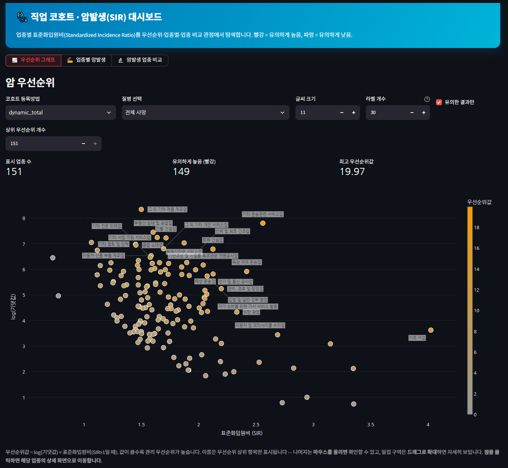

CHAPTER 3 · 파편적 데이터에서 맥락성 정보로
그럼 — 빅데이터는 대안이 될까요?
KBS 뉴스9 — “일터와 암, 상관관계는?” (본 연구 보도 화면)

▶ 발표 당일 라이브 시연
직업 코호트·암발생(SIR) 자동분석 대시보드 — ▶ 발표 당일 라이브 시연
사람이 의심해야 조사가 시작되던 시대에서, 데이터가 먼저 의심해 주는 시대로
— 절반만 그렇다.